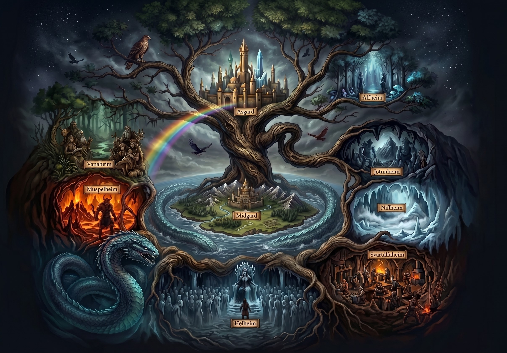

El susurro de Yggdrasil y el ocaso de los dioses
La mitología nórdica es el relato épico de los pueblos escandinavos: un cosmos de nueve mundos unidos por un fresno sagrado, deidades guerreras con destino mortal, batallas implacables y la constante sombra del Ragnarök, el cataclismo donde todo renace.

Odín — El Padre de Todo
Soberano supremo de Asgard, dios de la sabiduría oculta, la victoria marcial, la hechicería (galdr) y la poesía.
Más que un gobernante benevolente, Odín es una deidad errante e incansable que busca desesperadamente conocimientos para retrasar el destino fatal del Ragnarök. Sacrificó su ojo izquierdo en el pozo del sabio Mímir para beber de sus aguas de entendimiento supremo, y se colgó del árbol del mundo, Yggdrasil, herido por su propia lanza Gungnir durante nueve noches sin sustento alguno, arrancando los secretos mágicos de las runas desde el abismo. Rige el gran salón del Valhalla, donde reúne a los guerreros más valientes caídos en combate (einherjar). Siempre vigila el cosmos asistido por sus dos cuervos espías, Hugin (pensamiento) y Munin (memoria), sus feroces lobos Geri y Freki, y cabalga el corcel de ocho patas Sleipn.

Thor — El Protector de Midgard
Campeón de los dioses, señor del trueno, el relámpago, las tormentas, la fuerza colosal y protector de la humanidad y del orden frente al caos de los gigantes.
Primogénito de Odín y de la personificación de la tierra, Fjörgyn, Thor es la fuerza defensiva más temida de todo el panteón escandinavo. De temperamento fiero pero noble y protector con los campesinos y guerreros mortales, recorre el firmamento en un carro tirado por los machos cabríos mágicos Tanngrisnir y Tanngnjóstr. Su poder se concentra en tres artefactos sagrados forjados por los enanos: Mjölnir, el martillo trueno infalible que nunca falla un golpe y regresa a su mano; el cinturón mágico Megingjörð, que duplica su fuerza ya incontenible al ajustarse; y los guantes de hierro Járngreipr, necesarios para empuñar el mango incandescente del martillo. Su némesis predestinada es la serpiente Jörmungandr, a quien está destinado a aniquilar antes de sucumbir a su veneno letal.

Loki — El Artífice del Caos
Deidad de la astucia, el engaño, el fuego salvaje y la ambigüedad moral; catalizador del cambio, las metamorfosis y la ruina cósmica.
Hijo de los gigantes Fárbauti y Laufey, Loki no pertenece por linaje a los Æsir, pero fue admitido en Asgard tras pactar un juramento de hermandad de sangre con el mismísimo Odín. Es una figura de dualidad constante: salva a los dioses en innumerables ocasiones con su ingenio e inventiva, pero sus artimañas y envidia conducen a las peores tragedias del panteón, notablemente el complot para asesinar al luminoso dios Baldr mediante una flecha de muérdago. Capaz de alterar su forma física a voluntad en animales de todo tipo, es además el progenitor de las bestias más temibles del cosmos junto a la giganta Angrboda: el lobo Fenrir, la soberana de los muertos Hela y la serpiente Jörmungandr. Tras ser castigado y atado con las entrañas de su propio hijo bajo el goteo constante de veneno de serpiente, romperá sus cadenas en el Ragnarök para comandar el barco fúnebre Naglfar y liderar a las fuerzas del caos contra los dioses.

Freyja — Señora del Amor y la Guerra
Líder indiscutible de la estirpe divina de los Vanir, regente de la magia profética (seidr), el amor apasionado, la fertilidad, la belleza, la muerte gloriosa y el oro.
Hija del dios marino Njord y hermana de Freyr, Freyja llegó a Asgard como rehén de honor para sellar el tratado de paz entre los clanes de dioses, donde introdujo y enseñó las artes de la hechicería a Odín. Posee una autoridad marcial comparable a la del Padre de Todo: en cada batalla, ella tiene el derecho prioritario de escoger a la mitad de los guerreros caídos para llevarlos a su prado sagrado, Fólkvangr, y a su gran salón Sessrúmnir. Porta el deslumbrante collar de oro Brísingamen, viaja en un carro de combate tirado por dos grandes gatos azules o montada en el jabalí de cerdas doradas Hildisvíni, y viste un manto tejido con plumas de halcón que le concede la habilidad de surcar los cielos transformándose en ave.

Jörmungandr — La Serpiente de Midgard
El Uróboros nórdico (Miðgarðsormr), monstruo primordial del abismo marino y encarnación de la destrucción ineludible.
Segunda criatura nacida de la unión entre Loki y la giganta Angrboda. Al contemplar las profecías oscuras que anunciaban que los hijos de Loki desencadenarían la caída de Asgard, Odín la arrebató de su cuna y la arrojó a las profundidades insondables del océano que cerca el mundo de los hombres (Midgard). La bestia creció de forma tan monstruosa y desmedida que terminó rodeando por completo toda la masa continental terrestre, mordiéndose su propia cola para mantener el equilibrio del mar. Su odio hacia el dios Thor es legendario, protagonizando enfrentamientos mitológicos directos como la jornada de pesca con el gigante Hymir. Cuando finalmente suelte su cola y emerja hacia la superficie durante el Ragnarök, escupirá mares de veneno que cubrirán las olas y los cielos, provocando tsunamis apocalípticos antes de librar su batalla final contra el dios del trueno.